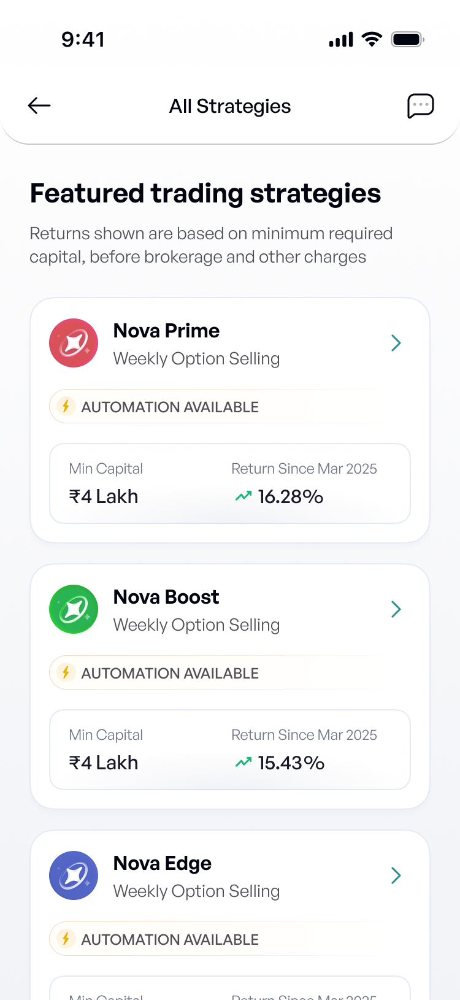
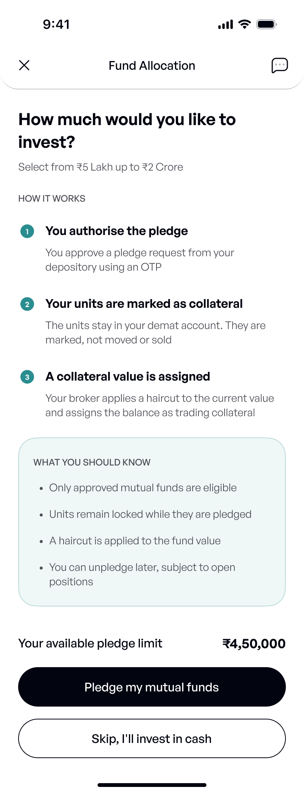
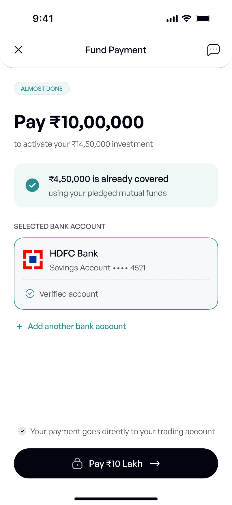

Selected workCase 01 of 04
01 — marketfeed · Activation
Capital that already existed
Half the users who linked a trading account never funded it. I couldn't lower the ₹5 lakh minimum, so I changed where the money could come from.
70%+
Activation in the test cohort
From around 51%. Measured as completed fund allocation, the same definition as the baseline.
32
Funded partly by pledging
Rather than funding the whole amount in cash. Pledging was optional and most had never heard of it.
75%
Fewer support queries
On fund allocation, roughly, the clearest signal the sequencing change did the work.
Directional figures from memory. I no longer have access to the original dashboards, and this was a cohort release, other work shipped in the same window, so I wouldn't claim every point of the improvement came from this change alone.
Context
Automated trading for people with no time to trade
marketfeed began as a financial education platform, news, blogs, market explainers, and built a large YouTube following before it shipped a trading product. When it moved into automated trading, that audience came with it.
A user picked a strategy, linked their IIFL trading account, allocated capital, and let marketfeed place the trades. The money never sat with us; we earned a share of what was invested. Five steps, and the one in the middle decided everything: until the account was funded, the user had no product and the business had no revenue.
I was one of the founding designers and spent five years there. This covers one quarter on the activation squad, where I owned the metric.

The activation journey
The problem
Acquisition worked. Activation didn't.
About half the users who linked a trading account never completed fund allocation. The largest fall in the funnel, and it was the last step.
These weren't cold users. Most arrived from marketfeed's own YouTube channel, having already spent hours learning about markets from us. By the time they reached this screen they had completed KYC, opened a broker account and chosen a strategy. The only thing left was the money.
I worked with the analytics team in Mixpanel to locate the drop, and used Microsoft Clarity to watch what people actually did on the screen. Both pointed at the same stage.
Why it mattered commercially. Revenue was a percentage share of what users invested. An unfunded account earned nothing and still carried the full acquisition cost. Activation wasn't a UX metric here, it was the point at which the business started to exist.
Constraints
Four things I couldn't change
The design space was whatever was left after these. Three were given to me. The fourth was my own call.
Product
₹5,00,000
In cash, up front, before a single trade had run.
The strategies were options-selling. They need capital to hold positions plus reserve to top up margin if the market moves against you, otherwise you go back to the user mid-cycle asking for more. Below that level they couldn't run properly.
Regulatory
No expected returns
The most direct way to build confidence would have been showing people what they could expect to earn. Not available to us as a projected or guaranteed return.
Technical
Money moves in IIFL
Funding happens inside the broker's app, on a rail we didn't own. Whatever I designed had to hand off, come back, and verify itself.
Scope, my call
One stage, not five
Onboarding was still an MVP and we could have rebuilt all of it. Rebuilding five stages to fix one costs a quarter, risks what already works, and makes the result impossible to attribute.
I also had a list of UX problems with that step, a blank amount field, validation that only fired after you'd committed, a trip out to the broker's app, a manual refresh to see whether the money had landed. All of it was real. None of it was why people left.
Research
Sixteen conversations changed the problem
14/16
already held mutual funds
A small sample, and worth saying so. It was enough to kill the assumption I walked in with.
What I assumed
Users didn't have ₹5 lakh to commit, and the step needed a better form.
What I found
They weren't people who don't invest. They invest comfortably in things they understand, a mutual fund starts at a few hundred rupees, with none of the dread they attached to trading. The same person with ₹10 or ₹20 lakh in mutual funds and fixed deposits would hesitate at ₹5 lakh of new cash into an automated product. It read as a different category of decision, not a different amount.
And the users who did complete gave me the answer. Some had already pledged their own mutual funds to fund the account. They had worked it out themselves. Nothing in our product had ever told them it was possible.
What changed
The problem wasn't a lack of capital. It was asking for new cash.
The question that unlocked this wasn't about our product at all. It was "what else do you invest in?"
The reframe
Don't reduce the ask. Change the source.
Five directions. Four closed, one of them on principle rather than feasibility.
Lower the minimum
The strategy needs the capital. Closed on product economics, not design preference.
Show expected returns
Not available to us as a projected or guaranteed return.
Add education into the flow
Fund allocation was already the highest-friction moment. I moved education earlier in the product instead.
Target only risk-tolerant users
Improves activation by shrinking the funnel. Most of our users came from a financial education channel where risk appetite isn't predictable, this would have hit my OKR at acquisition's expense.
Pledge mutual funds
An existing asset, and a capability the broking rail already supported.
I didn't want to improve activation by removing people from the funnel, and I said so at the time.
How it worked
The minimum never moved. The cash did.
Pledging lets a user mark mutual fund units as collateral. The units stay in their demat account, keep growing, and release roughly 80% of their eligible value as trading capital.
This is the part that makes the case study work, so it's worth being precise: the ₹5 lakh requirement did not change. What changed is how much of it had to arrive as new money.
Pledged value counts toward the capital requirement, and a cash component of roughly 10% still has to be there. So a user with ₹4,50,000 of eligible mutual funds needs ₹50,000 in cash to reach the floor, instead of ₹5,00,000.
Nothing is sold. The SIP continues. The fund keeps compounding. The user ends up with exposure to both their existing investment and the trading strategy from one pool of capital, which is why the people who understood it found it genuinely exciting rather than merely convenient.
What failed first
The information wasn't wrong. The sequence was.
We released the first version to a cohort of 100 users. Support queries went up, and fund-allocation completion fell.

My first version did the obvious thing: explain pledging, then let people use it. Define the mechanism, list what you should know, ask for the decision. It was accurate, complete and well built.
What came back was support volume. Users asked what pledging meant, how it worked, whether they would lose their money, what would happen to their existing funds. People who had arrived to complete a payment stopped to work out what a haircut was. Completion went the wrong way.
Look at what the screen asks: "how much would you like to invest", and then at everything standing between that question and the control that answers it.
We had put a lesson in front of the only thing the user came there to do. My instinct was to write better education. That wasn't it: the problem wasn't the information, it was introducing an unfamiliar financial concept in the middle of a payment.
What actually changed
This wasn't caught in a prototype test. It was a real release to real users, and the signal came back as support tickets and abandoned allocations. The explanation wasn't deleted, it moved behind a link, where it's available to anyone who wants it and in front of nobody who doesn't.
The redesign
Value first. Mechanism on request.
Four steps. Each one exists because of something the previous version got wrong.
Step 01
Step 02
Step 03
Step 04

Decision: put the constraint inside the control
The original screen was an open field. You typed a number and found out afterwards that the minimum was ₹5 lakh and that it had to be in multiples of ₹1 lakh. Validation was a punishment for guessing.
The slider carries both rules in its own geometry, it starts at the minimum, ends at the maximum, and steps in lakhs. An invalid amount isn't caught after you commit; it can't be reached. Most of the validation logic stopped being an error state and became a property of the component.
Decision: stop making the user reconcile the payment
Funding happens inside IIFL. In the old flow the user left the app, opened IIFL, remembered the number, typed it again, came back, and pressed refresh until the balance appeared. That is the user performing the system's job.
Working with engineering, we deep-linked into IIFL with the amount already filled in. The user authorises it there and returns, and we verify the payment ourselves. Eight steps the user managed became four decisions.
Before, the user reconciled it themselves
After, the system reconciles it
Removed: re-typing · manual refresh · an explanation standing in front of the action. The redesign took work away, not just screens.
Edge states
It couldn't only work when everything went right
Adding a second funding source meant eligibility checks and a new class of failure states. This is money, the flow had to hold when it broke.
What I'd fix. On the no-eligible-funds screen the pledge card simply disappears and leaves a gap. It should be replaced in place with the reason, same position, different content, so the absence reads as something checked on the user's behalf rather than something missing. It's the weakest screen in the flow and I'd change it first.
Reflection
What I took from it
- Constraints can become the brief. When the obvious solution couldn't move, it forced a better question. "Can I change the amount?" was closed. "Can I change where it comes from?" was open.
- Research changes the problem, not just the UI. We started at "users won't put ₹5 lakh in" and ended at "users already have capital somewhere else." The second framing had a solution in it; the first didn't.
- When an explanation isn't landing, check the order before the words. I nearly rewrote the copy. The copy was fine.
One thing I'd change
The explainer made pledging sound safer than it is. Units are locked while pledged, a haircut is applied to their value, and in a drawdown that collateral is what's exposed. We were so focused on making an unfamiliar mechanism feel safe that we left out the part that makes it a decision.
I'd move that next to the toggle rather than into the FAQ, and bring compliance in earlier. I'd also want the result segmented by users who pledged versus users who funded entirely in cash, that's what would tell me how much came from the idea itself rather than the rest of the redesign.
Next project